Overview
Linefy is a versatile, cross-platform, GPU-powered graphics library for drawing colored, textured lines, polylines, points and meshes in screen and world spaces.
Features
- Draw everywhere: Runtime, Scene view, Gizmos, inside Inspectors and Editor windows
- Fastest dynamic drawing with zero allocations.
- Lighting-fast static drawing with zero CPU usage.
- Cross-platform: mobile, WebGL, VR.
- Render-pipeline independent.
- PostProcessing is supported.
- Per-vertex adjustable: colors, width, texture coordinates.
- Antialiasing without Multisampling and post-effects.
- Import polygonal meshes with quad wireframe.
- Custom Matrix4x4 and Vector3 handles.
- Pixel Perfect Bitmap Fonts rendering.
- Clear and simple API. Full C# code included.
- No dependencies
- Over 15 demo scenes included.
Compatibility
- Unity 2017.4 or newer (tested with 2018, 2019, 2020, 2021)
What`s new in version 1.1
- Text renderering using LabelsRender class and LinefyLabelsRenderer component.
- Polyline: huge performance improvement.
- DotsAtlas: 1) added options for use as a bitmap font, 2) adjustable preview area appearance which drawn with Linefy itself. .
- Dots: 1) added non quad Dot support 2) added dot local offset 3) Pixel Perfect mode
- Added three additional algorithms for calculating the elements width . An early algorithm introduced in 1.0 is now is called PixielBillboard.
- Now used quadrilateral UV interpolation to Lines and Polyline that projects texture and colors without distortion.
- Vector3Array handle. An editor class to mass manipulate array of positions in SceneView.
- Added EditablePolyline, EditableLine, EditableDots components that serialize polyline, lines and points, respectively, and allow you to edit their position in the Scene view mode.
- Added ready to use WYSIWYG primitives.
- Advansed serialization for Lines,Polyline, Dots. Now each class has its own serialized representation, which can be stored in a MonoBehaviour or ScriptableObject object. It can also be used to display all the properties of the object in the inspector.
- Added ZTest property
- Now drawing in OnDrawGizmos() OnDrawGizmosSelected() is supported.
- Now drawing in Editor.OnInspectorGUI() EditorWindow.OnGUI() is supported.
- Remastered Demo scenes and Documentation
- Tested with Unity 2019, 2020, 2021
Limitations
- Lines, Polylines, Dots uses internal unlit shaders and cannot be replaced with custom shaders.
- Linefy is primarily a scripting library. Basic C # scripting skills are required to utilize all features.
Known Issues
- The exception Preview scene could not be created is thrown after repeatedly switching between inspectors which use EditorGUIViewport. To fix re-open Unity Editor.
- In a Unity version earlier of 2018.4, the serialization of PolygonalMeshAsset created in later versions may be broken. To fix this issue recreate PolygonalMeshAsset in your current version
Aditional downloads
Guide
This guide lists important aspects of working with the library. For a quick start, you can skip this documentation and use the numerous examples provided with the package.
Basic concept
There are two way to use Linefy:
- Use components derived from MonoBehaviour (Runtime only)
- Primitives
- EditableLine, EditablePolyline, EditableDots
- LinefyLabelRenderer
- PolygonalMeshRender
- Completely by code ( Runtime, Editor)
The core of Linefy code is based on the OOP principles, for rendering used Retained Mode. All drawable objects is inherited from Drawable. The life cycle of a Drawable object has four stages:
- Create using constructor Drawable foo = new Drawable();
- Assign properties (if needed): colors, widths, positions itc.
- Call drawing method every frame which object should displayed.
- Dispose (if needed) foo.Dispose();
Drawing
There are different drawing techniques for certain purpose.
Runtime
Drawing at runtime has to be performed using Drawable.Draw() method within the Update() or LateUpdate() functions.
- To draw in given camera screen space use matrix that calculated by NearClipPlaneMatrix
- To draw when Play Mode is off use [ExecuteInEditMode] in parent component.
- When Unity loads a new level, all objects of the old one are destroyed automatically, so there is no need to call Drawable.Dispose() at the end of game, but only if you need to destroy the Drawable during gameplay.
Draw in UI
Only a Canvas.renderMode ScreenSpaceCamera and WorldSpace is supported
Drawing in Canvas is a subset of drawing at runtime, but requires a custom transformation matrix bound to the RectTransform. To get matrix that anchored to RectTransform use one of this options:
- use one of these extension methods
- Matrix4x4 RectTransform.GetCenteredWorldMatrix()
- Matrix4x4 RectTransform.GetWorldMatrix()
- Use component LinefyRectTransform
Scene view
Drawing in Scene view has to be performed using OnSceneGUIGraphics in editor scripts within the OnSceneGUI() function.
Gizmos
Drawing gizmos has to be performed using Drawable.DrawNow() method in OnDrawGizmos() or OnDrawGizmosSelected()
Inspector
Drawing in Inspector has to be performed using EditorGUIViewport in editor scripts within the OnInspectorGUI()
function.Editor Window
Drawing in EditorWindow has to be performed using EditorGUIViewport in editor scripts within the OnGUI()
function.Classes
Here described runtime classes hierarchy.
Drawable namespace:Linefy
An base class for all drawable objects
void Draw( Matrix4x4 matrix , Camera camera, int layer )
Actually sends objects to render. Use inside Update or LateUpdate only.
- matrix - world space matrix. To calculate the screen space matrix of a specific camera, use the NearClipPlaneMatrix
- camera - if null , the mesh will be drawn in all cameras. Otherwise it will be rendered in the given camera only.
- layer - layer to use.
void DrawNow( Matrix4x4 matrix )
Use inside OnDrawGizmos or OnDrawGizmosSelected only.
- matrix - An world space matrix.
void Dispose()
Destroys all internal unmanaged Objects. The main purpose is to use it in the editor scripts; in Game mode, objects are deleted automatically when a new level is loaded.
bool disposed
Returns true when the instance is disposed. You should not call any methods on a disposed instance.
LinefyDrawcall: Drawable namespace:Linefy
An abstract base class for Lines, Polyline, Dots, PolygonalMesh
float boundSize
The bound size. If value is negative then auto recalculation of bounds will performed
int renderOrder
Render queue of material.
int transparent
Sets opaque or transparent material. When off, an opaque material with alpha clipping is used. Note that transparent materials have sorting issues.
Color colorMultiplier
Base color
Texture texture
Main texture.
float viewOffset
Shifts all vertices in world space along the view direction by this value. Useful for preventing z-fight
Example of how viewOffset works
float depthOffset
Material depth offset factor.
RangeFloat fadeAlphaDistance
The distance to camera which color alpha (transparency) fading start / end
Example of how fadeAlphaDistance works
CompareFunction zTest
How should depth testing be performed. An wrapper for shader ZTest state.
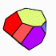 PolygonalMesh: LinefyDrawcall : Drawable namespace:Linefy
High-level wrapper for Mesh with polygon-based topology. Unlike other LinefyDrawcall classes, there is access to the internal generated mesh generatedMesh. You can assign it to a MeshFilter.mesh, or instantiate. There is a built-in vertex-lit, vertex color, textured material that is used when drawing with Draw() and DrawNow().
constructor PolygonalMesh( Vector3[] posData , Vector2[] uvsData, Color[] colorsData, Polygon[] polygonsData )
Creates PolygonalMesh instance
- posData - initial vertices positions
- uvsData - initial UV coordinates. Can be null
- colorsData - initial colors. Can be null
- polygonsData - array of Polygon
void SetPosition(), SetColor(), SetUV()
methods for assign vertices attributes
void Apply()
Updates the generated mesh. Automatically called before any drawing. Use only if you want to update the mesh, but don't draw it.
int dynamicTriangulationThreshold
The number of corners in a polygon, greater than or equal to which the polygon will dynamically re-triangulate when its shape changes.
Example of how dynamicTriangulationThreshold work
LightingMode lighingMode
Defines algorithm of recalculation mesh lighting data .
NormalsRecalculationMode normalsRecalculationMode
Defines mesh normals recalculation algorithm.
Vector4 textureTransform
Texture transform of internal material. xy = scale zw = offset
bool doublesided
Enables doublesided render mode of internal meaterial
float ambient
Ambient lighting of internal material. 0 = backface is black 1 = backface equals main color ( unlit shading )
Mesh generatedMesh
The current state of internal mesh. You should not modify it, use it on read-only mode.
Lines positionEdgesWireframe
if positionEdgesWireframe instance provided, then it will automatically setups(assign lines count and its positions) to display edges wireframe. Note that you should draw wireframe in same matrix as PolygonalMesh. To avoid intersections of wireframe with mesh surfaces, adjust viewOffset of one of them.
Use class SerializationData_PolygonalMesh from Linefy.Serialization namespace to serialize all properties of PolygonalMesh at once and display its properties in inspector.
void LoadSerializationData( SerializationData_PolygonalMesh inputData)
Reads and apply inputData to this instance properties (deserialization)
void SaveSerializationData( SerializationData_PolygonalMesh outputData)
Writes the current properties to the outputData (serialization)
void BuildFromSPM(SerializedPolygonalMesh spm)
Reads and apply polygons, vertices positions, colors and UV data from spm (deserialization)
void SaveToSPM( SerializedPolygonalMesh spm)
Writes polygons, vertices positions, colors and UV data to spm (serialization)
PrimitivesGroup: LinefyDrawcall : Drawable namespace:Linefy
An abstract base class for Lines, Polyline, Dots
int count
Number of elements.
int capacityChangeStep
Determines how often the internal arrays capacity will change when count changes. A lower value saves the GPU performance, but leads to a frequent allocation of memory when the count changing. Set CapacityChangeStep = 1 in case of you do not plan to dynamically change the count.
float widthMultiplier
Width factor. The used measuremnt units are defined by the widthMode
WidthMode widthMode
Algorithm for calculating the width.
 Dots:
PrimitivesGroup : LinefyDrawcall : Drawable namespace:Linefy
Dots:
PrimitivesGroup : LinefyDrawcall : Drawable namespace:Linefy
An array of textured 3D rectangles. Each rectangle is described by the Dot structure. Works in conjunction with DotsAtlas, where described the texture source and coordinates layout.
DotsAtlas atlas
The used DotsAtlas. If null then used default atlas that located in Assets/Plugins/Linefy/Resources/Default DotsAtlas
bool pixelPerfect
Enables pixel perfect rendering mode, which ensures that the onscreen size and defined dot size are always the same. Only works for widthMode == PixelsBillboard.
Use class SerializationData_Dots from Linefy.Serialization namespace to serialize all properties of Dots at once and display it in inspector.
void LoadSerializationData(Linefy.Serialization.SerializationData_Dots inputData)
Reads and apply inputData to this instance properties (deserialization)
void SaveSerializationData(Linefy.Serialization.SerializationData_Dots outputData)
Writes the current properties to the outputData (serialization)
EditableDots component is WYSIWYG representation of Dots class. You can adjust properties in inspector and set position using scene view handles. To create EditableDots use menu GameObject/3d Object/Linefy/EditableDots
LinesBase: PrimitivesGroup : LinefyDrawcall : Drawable namespace:Linefy
An abstract base class for Lines, Polyline
float feather
The smoothness of the edges. Works only when transparent is on. This value defines the distance the color.alpha decays from the edge of the line. Can be used to draw anti-aliased lines. When used widthMode : PixelsBillboard, WorldspaceBillboard, PercentOfScreenHeight is measured with onscreen pixels. When used WorldspaceXY - in world units.
Example of how feather works
bool autoTextureOffset
When on the textures offset foreach vertex will recalculated automatically when its positions changed
Example of how autoTextureOffset works
bool textureOffset
x texture coordinates offset
bool textureScale
x texture coordinates scale
Lines: LinesBase : PrimitivesGroup : LinefyDrawcall : Drawable namespace:Linefy
The array of 3d lines. Each line described by Line structure.
Use class SerializationData_Lines from Linefy.Serialization namespace to serialize all properties of Lines at once and display it in inspector.
void LoadSerializationData( SerializationData_Lines inputData)
Reads and apply inputData to this instance properties (deserialization)
void SaveSerializationData( SerializationData_Lines outputData)
Writes the current properties to the outputData (serialization)
EditableLines component is WYSIWYG representation of Lines class. You can adjust properties in inspector and set position using scene view handles. To create EditableLines use menu GameObject/3d Object/Linefy/EditableLines
Polyline: LinesBase : PrimitivesGroup : LinefyDrawcall : Drawable namespace:Linefy
3d polyline that defined by array of PolylineVertex connected sequentially.
PolylineVertex [int]
indexer to get/set individual PolylineVertex. Note that PolylineVertex is value type.
bool isClosed
If enabled, connects first and last vertex.
bool lastVertexTextureOffset
The texture offset of the last virtual vertex when the polyline is closed.
Use class SerializationData_Polyline from Linefy.Serialization namespace to serialize all properties of Polyline at once and display it in inspector.
void LoadSerializationData( SerializationData_Polyline inputData)
Reads and apply inputData to this instance properties (deserialization)
void SaveSerializationData( SerializationData_Polyline outputData)
Writes the current properties to the outputData (serialization)
EditablePolylines component is WYSIWYG representation of Polyline class. You can adjust properties in inspector and set position using scene view handles. To create EditablePolyline use menu GameObject/3d Object/Linefy/EditablePolyline
 Drawable namespace:Linefy
Drawable namespace:Linefy
A 3d text renderer object. Incapsulates array of Labels. Based on the Dots class, therefore has most of the same properties.
DotsAtlas atlas
Font DotsAtlas. If null, the default font will be used.
Label [int]
get/set labels indexer. Note that Labels is value type.
void SetPosition(), SetText(), SetOffset()
Methods for assigning labels position, text, offset by index.
float size
A size multiplier. The measurement units are defined by widthMode property.
bool drawBackground
Enables the display of a 9-grid-slice background behind the text. The background are configured in DotsAtlas.
Vector2 backgroundExtraSize
The size to be added to the automatically calculated background size.
bool pixelPerfect
Snaps the position of glyphs to the nearest pixel on the screen so that guarantee exact pixel dimensions of glyphs.
Color backgroundColor, textColor
Background and text colors respectively
int count
Number of Labels
TextAlignment horizontalAlignment
The positioning of the text reliative its center
WidthMode widthMode
this property is equivalent of widthMode but not supported WorldspaceBillboard
LinefyLabelsRenderer component is WYSIWYG representation of LabelsRenderer class. You can adjust properties in inspector. To create use menu GameObject/3d Object/Linefy/LabelRenderer
Editor Classes
Here described editor classes
OnSceneGUIGraphics namespace:Linefy
The static manager that controls drawing on Scene View
void DrawWorldspace( Drawable item, Matrix4x4 matrix )
Submit object to render. Use inside OnSceneGUI only.
- item - an item that should be drawen in Scene view
- matrix - world space matrix
void DrawGUIspace( Drawable item, Matrix4x4 matrix )
Submit object to render. Use inside OnSceneGUI only.
- item - an item that should be drawen in Scene view GUI space
- matrix - GUI space matrix. Matrix position is position in pixels from top left to bottom right corner of Scene view.
Vector2 GetSceneViewPixelSize()
Returns size of Scene view in pixels
EditorGUIViewport namespace:Linefy
The view area of a virtual orthographic scene that can be displayed in the editor GUI in the specified rect. Designed for drawing in a Editor Window and Inspectors.
Comparing GUI and Local Coordinate Systems
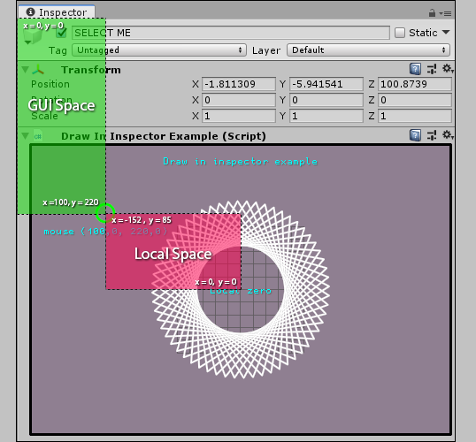For correct display, use this sequence of actions when EventType.Repaint raised
- Set parameters using SetParam()
- Submit Drawable to draw using DrawGUISpace or DrawLocalSpace
- Call Render()
void SetParams( Rect rect, float zoom , Vector2 pan )
Setup viewport
- rect - GUI rect where viewport should be drawen
- zoom - view size (default = 1)
- pan - view offset (default Vector2.zero)
void DrawLocalSpace( Drawable item, Matrix4x4 matrix )
Submit object to render in scene local space
- item - an item that should be drawen in vieport
- matrix - viewport space matrix.
void DrawGUISpace( Drawable item, Matrix4x4 matrix )
Submit object to render in GUI space
- item - an item that should be drawen in vieport
- matrix - GUI space matrix. Matrix position of defines GUI position
void Render( Drawable item, Matrix4x4 matrix )
Actually draws GUI rect with rendered scene
Handles
Custom 3D controls for Scene view.
Vector3Handle namespace:Linefy
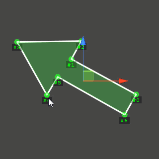An 3d space position handle. Similar to FreeMoveHandle
constructor Vector3Handle(string name, int id, Vector3Handle.Style style )
Creates Vector3Handle instance
- name - handle name
- id - handle Id. Use to identify actions when multiple handles exist.
- style - handle style
Vector3 DrawOnSceneGUI( Vector3 position )
draw handle at given position The new value modified by the user's interaction with the handle. If the user has not moved the handle, it will return the same value as you passed into the function.
Action <int> onDragStart
The action is fired when the dragging an handle starts where int is handle id.
Action <int> onDragUpdate
The action is fired when handle dragging where int is handle id.
Action <string, int, Vector3> onDragEnd
The action is fired when the dragging an handle ends where int is handle id, string name, Vector3 position value.
void Dispose
Destroys all internal unmanaged Objects. Use in OnDestroy() and OnDisable() to cleanup unused resources.
Matrix4x4Handle namespace:Linefy
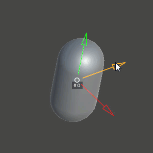An 3d space Matrix4x4 handle. Similar to Handles.TransformHandle but deals with ref Matrix4x4 as argument . Position, Rotation, Scale Modes switches accordingly with current editor Tool.
constructor Matrix4x4Handle(string name, int id )
Creates Matrix4x4Handle instance
- name - handle name
- id - handle Id. Use to identify actions when multiple handles exist.
void DrawOnSceneGUI( ref Matrix4x4 matrix, float sizeMultiplier, bool active, bool drawIdLabel, bool drawNameLabel )
draw handle at given matrix The new value modified by the user's interaction with the handle. If the user has not moved the handle, it will return the same value as you passed into the function.
void DrawOnSceneGUI( ref Matrix4x4 matrix, float sizeMultiplier, bool active, bool drawIdLabel, bool drawNameLabel )
draw handle at given matrix The new value modified by the user's interaction with the handle. If the user has not moved the handle, it will return the same value as you passed into the function.
Action <int> onDragStart
The action is fired when the dragging an handle starts where int is handle id.
Action <int> onDragUpdate
The action is fired when handle dragging where int is handle id.
Action <string, int, Matrix4x4> onDragEnd
The action is fired when the dragging an handle ends where int is handle id, string name, Matrix4x4 matrix value.
void Dispose
Destroys all internal unmanaged Objects. Use in OnDestroy() and OnDisable() to cleanup unused resources.
Vector3ArrayHandle namespace:Linefy
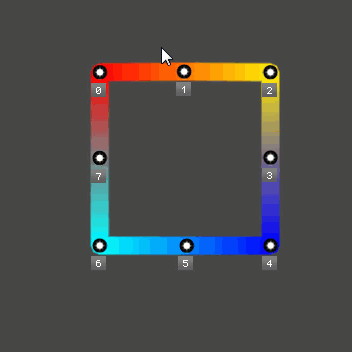The Handle to mass edit positions. Position, Rotation, Scale Modes switches accordingly with current editor Tool.
constructor Matrix4x4Handle(int count , string name )
Creates Vector3ArrayHandle instance
- name - handle name
- count - initial items count
void DrawOnSceneGUI( SerializedProperty[] prp_positions )
draw posions handles for each given prp_positions[..].vector3Value
void DrawOnSceneGUI( Vector3[] positions )
draw posions handles for each given positions[..] item
When you call method DrawOnSceneGUI, the settings window is also displayed in Scene View.
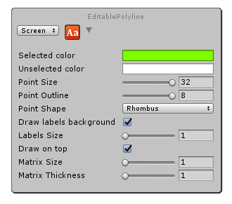Action <List<int>> onDragStart
The action is fired when the dragging an positions starts where Action <List<int>> is selected items.
Action <List<int>> onDragUpdate
The action is fired when positions dragging where Action <List<int>> is selected items.
Action <List<int>> onDragEnd
The action is fired when the dragging an positions ends where Action <List<int>> is selected items
Action <List<int>> onSelectionChanged
The action is fired when the selection changed where Action <List<int>> is selected items
void Dispose
Destroys all internal unmanaged Objects. Use in OnDestroy() and OnDisable() to cleanup unused resources.
Assets
DotsAtlas: ScriptableObject namespace:Linefy
An asset that refer to texture and describing its slicing, designed for use in conjunction with Dots. Each rectangle has its own index that Dot can refer to.
In the Unity Editor, create a new DotsAtlas by going to: Assets->Create->Linefy->DotsAtlas
DotsAtlas setup
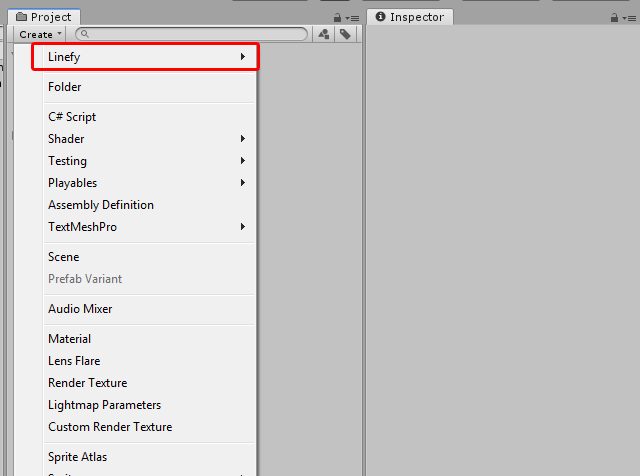DotsAtlas can be used as bitmap font source for LabelsRenderer. By default, the rects indices are equals to Unicode decimal value. To use custom character set Font Settings -> Enable Remapping.
Bitmap font setup
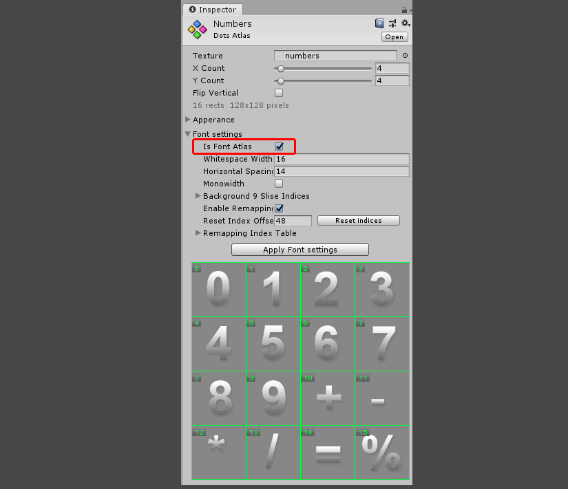All font settings are applied after clicking the button Apply Font settings.
PolygonalMeshAsset: ScriptableObject namespace:Linefy
An asset that used as data source for PolygonalMeshRenderer. Contains an embedded SerializedPolygonalMesh. The inspector has options for import polygonal mesh from Wavefront .obj file.
In the Unity Editor, create a new PolygonalMeshAsset by going to: Assets->Create->Polygonal Mesh Asset
Import and create PolygonalMeshRenderer
SerializedPolygonalMesh: ScriptableObject namespace:Linefy
A serialized representation of PolygonalMesh. Stores topology and vertices data. You can programmatically save the procedurally generated PolygonalMesh using SaveToSPM as well load using BuildFromSPM
There is no menu command to create this asset separately. It can only be created as part of parent PolygonalMeshAsset.
Components
PolygonalMeshRenderer: MonoBehaviour namespace:Linefy
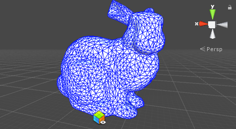An component that render SerializedPolygonalMesh. If the GameObject has a MeshFilter then component will replace it mesh by its own.
- PolygonalMeshAsset PolygonalMeshAsset - source asset
- SerializationData_PolygonalMesh polygonalMeshProperties - serialized mesh properies
- bool drawDefault - if enabled, mesh will be drawen even without MeshRenderer and MeshFilter. Parent GameObject transformation matrix and layer will be used. Internal material will be used.
- bool wireframeEnabled - draw wireframe.
- bool autoWireframeViewOffset - automatically calculate viewOffset for wireframe to pervent intersections with mesh surface
- SerializationData_Lines wireframeProperties - wireframe apperance
NearClipPlaneMatrix: MonoBehaviour namespace:Linefy
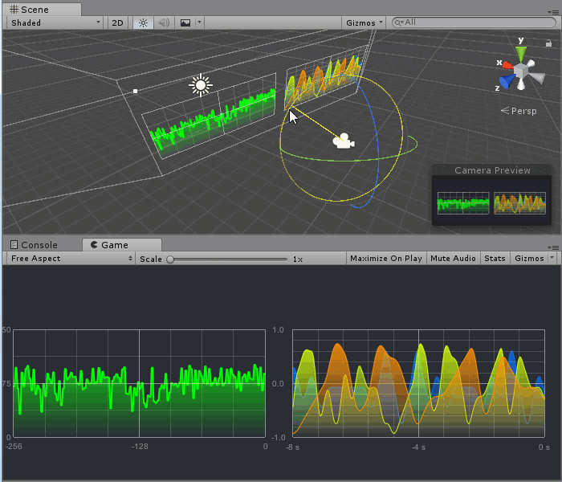This component calculate GUI and Screen space matrices for parent Camera and retain it as public fields.
- float offset - offset from camera near clip plane.
- Matrix4x4 gui - GUI space matrix.
- Matrix4x4 screen - screen space matrix.
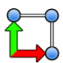 LinefyRectTransform: MonoBehaviour namespace:Linefy
An helper component that calculate and retain transform matrix from RectTransform
- bool centeredRectTransformMatrix - if enabled - center of RectTransform is matrix position, othervise - center is left bottom corner.
- Matrix4x4 rectTransformWorldMatrix - calculated matrix.
Structures
Polygon namespace:Linefy
A type that describes a single surface of a Polygonal Mesh.
- int smoothingGroup - Smoothing group ID. If an adjacent polygon has a different smoothing group ID, it shows a hard edge between them, otherwise the joint edge is smooth.
- int materialId - not used at the moment.
- PolygonCorner[] corners - The array of PolygonCorner that the polygon consists of. The order of corners matter. Corners connects sequentially counterclockwise.
PolygonCorner namespace:Linefy
The vertex of the Polygon
- int position - index of position
- int uv - index of UV coordinate
- int color - index of color
Label namespace:Linefy
Describes one label of LabelRenderer
- string text - label text
- Vector3 position - label position
- Vector2 offset - local offset relative to position
Dot namespace:Linefy
Describes one Dot of Dots
- bool enabled - dot visiblity
- Vector3 position - dot position
- Vector2offset - local offset relative to position
- Vector2 size2d - dot size
- int rectIndex - index of rect in DotsAtlas
- Color color - dot color
Line namespace:Linefy
Describes one line of Lines
- Vector3 positionA, positionB - line start/end positions
- float widthA, widthB - line start/end width
- Color colorA, colorB - line start/end colors
- float textureOffsetA, textureOffsetB - line start/end textureOffset
PolylineVertex namespace:Linefy
Describes one vertex of Polyline
- Vector3 positionA - vertex positions
- float width - vertex width
- Color colorA, colorB - vertex color
- float textureOffset - vertex textureOffset
Enumerations
WidthMode namespace:Linefy
Algorithm for calculating the width
- PixelsBillboard - Billboarded orientation, constant onscreen Width measured in pixels, perspective distortions are ignored.
- WorldspaceBillboard - Billboarded orientation, Width measured in world units, respects an perspective distortion..
- PercentOfScreenHeight - Billboarded orientation, constant onscreen Width measured in percents of Screen.height , perspective distortions are ignored.
- WorldspaceXY - Width is measured in world units, surface oriented on Z axis (lying on XY plane). Respects perspective distortion and matrix orientation.
LightingMode namespace:Linefy
The calculation of lighting data mode
- Unlit - no lighting
- Lit - normals
- NormalMapped - normals and tangents
NormalsRecalculationMode namespace:Linefy
Mesh normals recalculation algorithm
- Unweighted
- Weighted
SmoothingGroupsImportMode namespace:Linefy
- FromSource - use an smoothing group data from source
- PerPolygon - unique smoothing group for each polygon
- ForceSmoothAll - one smoothing group for all polygons